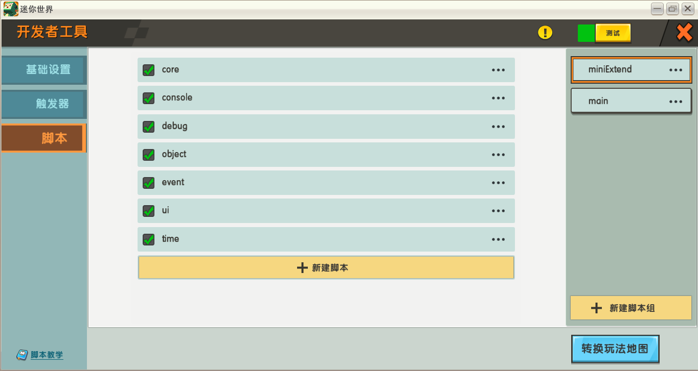

miniExtend 搭建环境
初始化全局作用域下的脚本
关于作用域，参见定义。
在全局作用域下，按一定顺序加入这些脚本。
脚本所对应的源文件正好为脚本名加上 .lua 扩展名，例如 core 脚本对应 core.lua。
以下是一个合法的顺序，你可以按照该顺序来创建脚本：
1. core
2. time
3. console
4. object
5. event
6. ui
直接将源代码复制到脚本中即可，也可以使用 来加载源代码。
来加载源代码。
完成后界面应如图所示，其中 main 脚本组管理自己的脚本。

图中的脚本和脚本组都是有命名的，这些命名不会影响 miniExtend 正常运行，但良好的命名习惯有利于你在错误发生时及时发现错误的脚本，而不会在错误信息前只有 [脚本]。
自定义 UI 环境
对于所有 UI 作用域，创建 ui_main 脚本，对应源文件为 ui_main.lua ，然后将 uiid 替换为所属 UI 界面 id 。
注： UI 界面创建时，对应作用域下可能会自动创建一个触发器，创建条件不明，你应该将其删除。


正式开始使用 miniExtend
做完以上操作，你已经成功搭建了 miniExtend 环境，现在可以新建脚本使用 miniExtend 功能了。
注：使用 miniExtend 的脚本必须位于全局作用域下，且位置必须在 miniExtend 脚本之后，否则无法正常使用 miniExtend 。

支持编辑器自动完成
你可以在自己代码中插入 ide.lua 中的内容，里面包含了 miniExtend 关键字，这允许你的编辑器自动完成单词。

该步骤完全是可选的。
第一个 miniExtend 脚本
接下来我们使用 miniExtend 监听玩家动作改变这一事件，事件发生时在日志以 "tag" 为标签输出 "Hello World!" 。
Event:connect([[Player.PlayAction]], function(paprm)
Console:logtag("tag", "Hello, world!");
end)